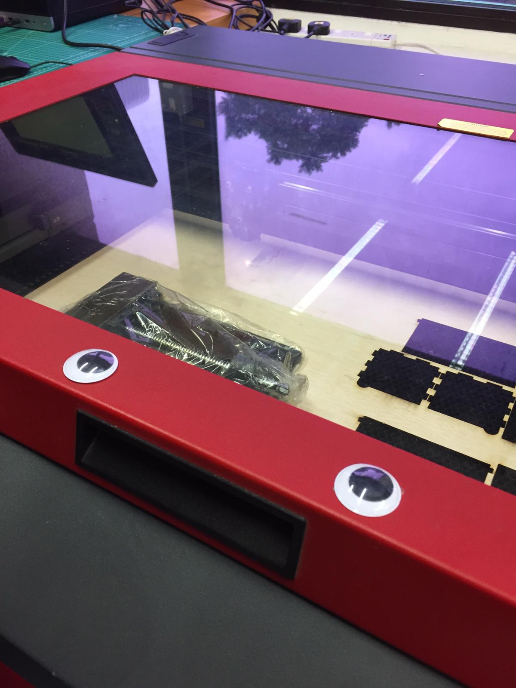
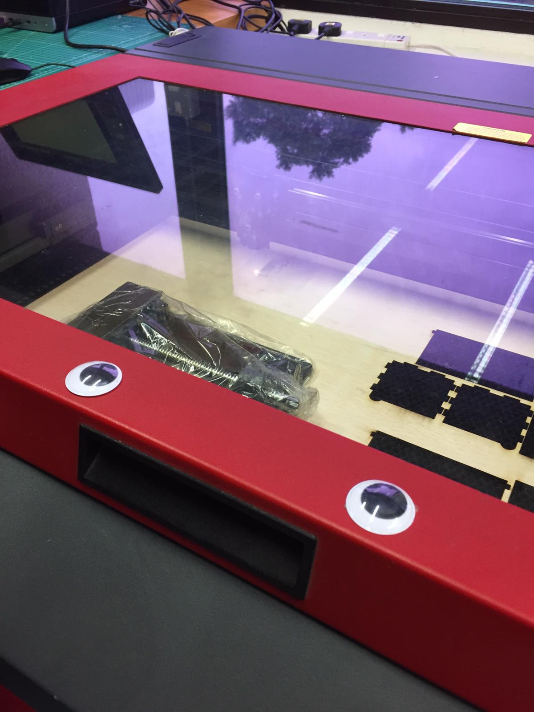
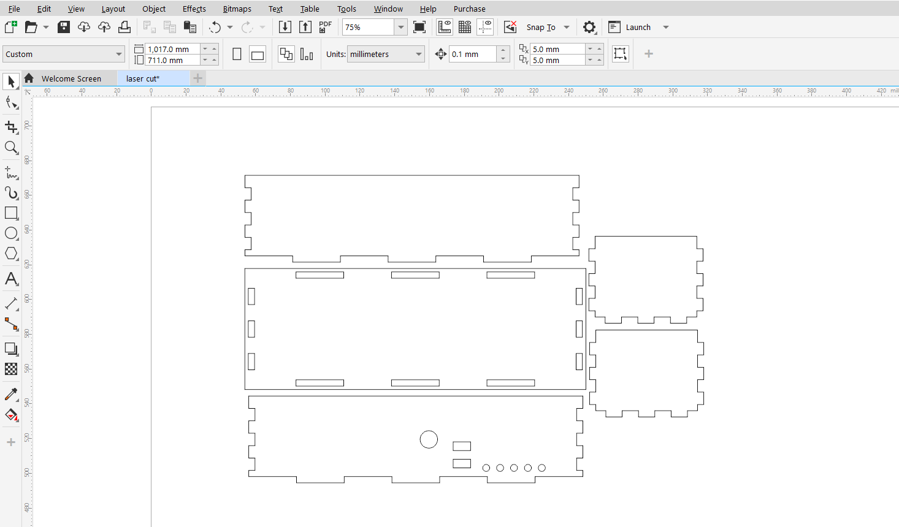

Computer controlled cutting
[°ロ°]
[°ロ°]
Laser cutting is a subtractive manufacturing process. It basically uses a Laser to cut through a sheet material. The high intensity of the laser beam causes the material to be vaporised.
I will be using the laser cutter to cut out my laser cut box design.As I will be using wood material, I set the thickness parameter to 3.5mm.
.png)
I modified the box parameters and added some cut features to house electronics. First I need to convert the file into a DXF document.
I first select the object I want and Create a new sketch. I then click on the surface I want until it turns blue.
.png)
I renamed the sketch as "Base.dxf" to differentiate it from the other sketches.
.png)
I then right click on the sketch and select "save as dxf".
.png)
If there are parts with similar profiles, you can just convert 1 part.
Once converting the parts, I import the files into corelDraw to check and finalise before sending it to the laser cutter.
Profiles should be arranged to minimise material wastage.
I then send the file to laser cut. Here is a time lapse of the process:
Completed box and assemble
.jpeg)
.jpeg)